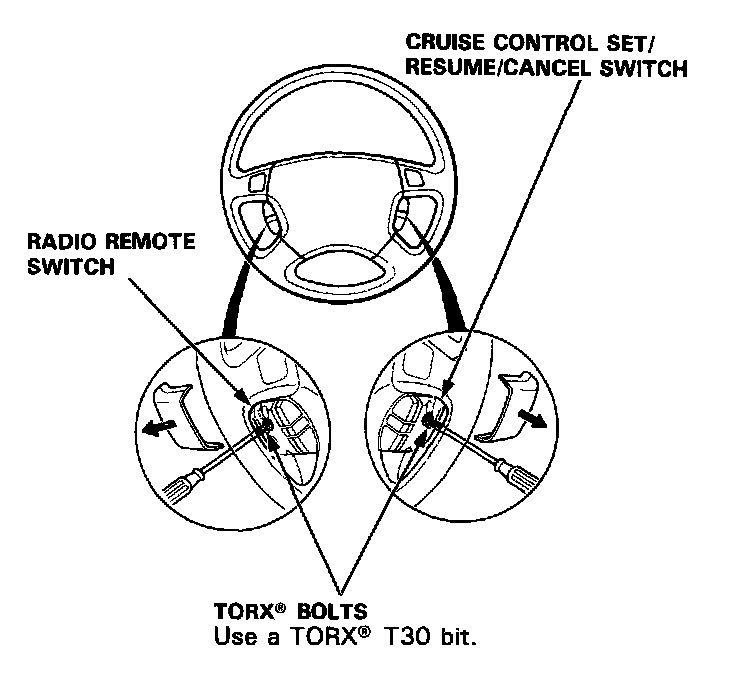
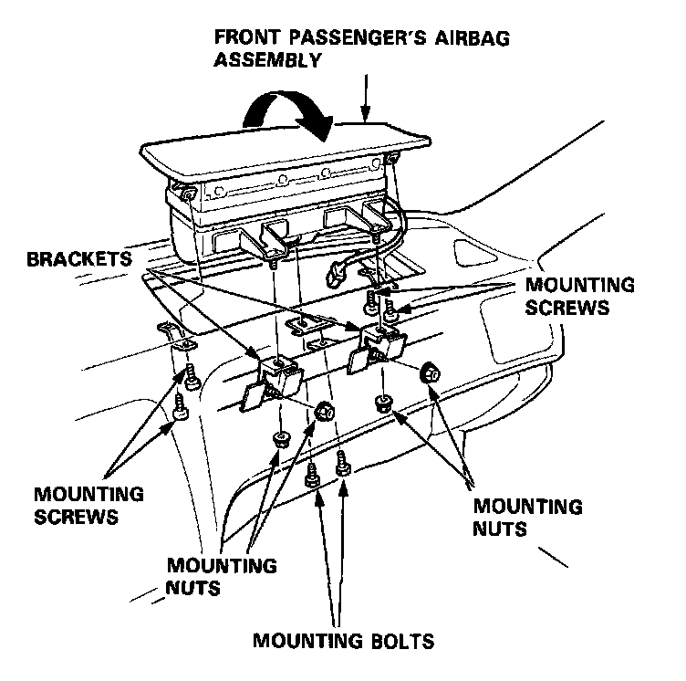
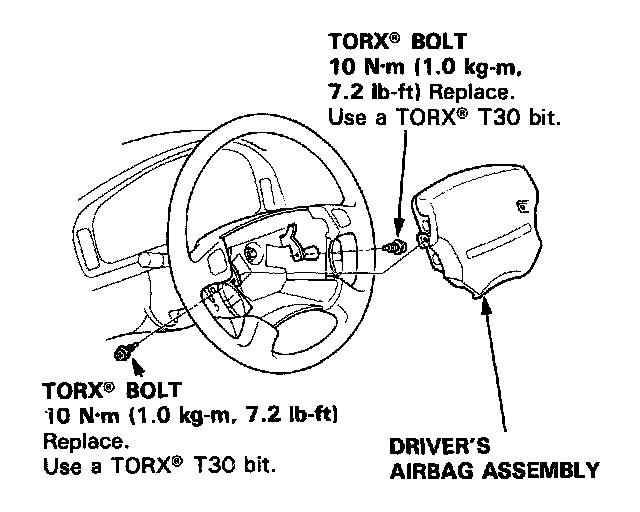
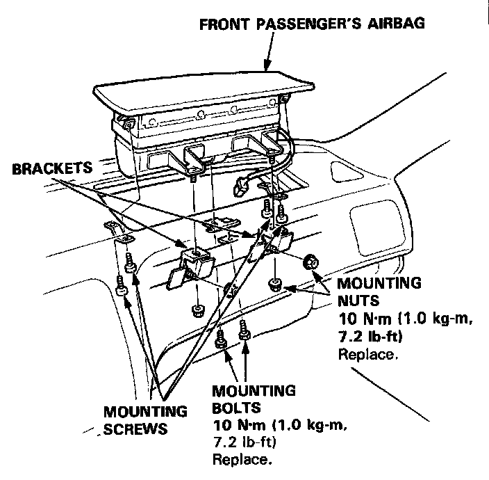
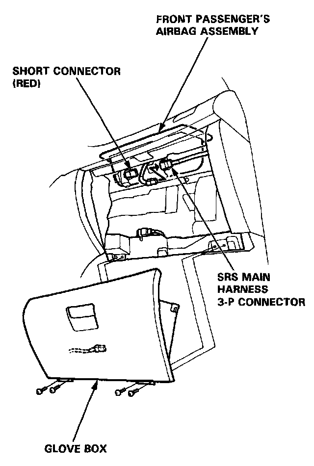
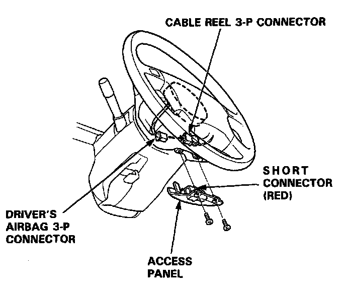
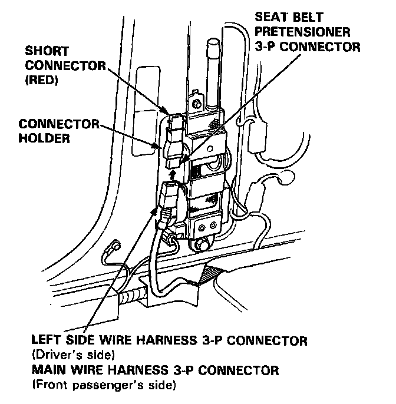

Airbag Assembly Replacement
Airbag Assembly Replacement
WARNING: Store a removed airbag assembly with the pad surface up, if the airbag is improperly stored face down, accidental deployment could propel the unit with enough force to cause serious injury.
CAUTION:
- Do not install used SRS parts from another car. When repairing, use only new SRS parts.
- Carefully inspect the airbag assembly before you in- stall it. Do not install an airbag assembly that shows signs of being dropped or improperly handled. such as dents. cracks or deformation.
- Do not disassemble or temper with the airbag assembly.
NOTE The original radio has a coded theft protection circuit. Be sure you get the code number before disconnecting the battery cables.
1. Disconnect the battery negative cable, then disconnect the positive cable.
2. Before disconnecting any parts of the SRS wire harness, install the short connectors - refer to the "Short Connector Installation" procedure.
3. Remove the airbags.
Driver's Side:
- Remove the two TORX bolts using a TORX T30 bit, then remove the driver's airbag assembly.

Front Passenger's Side:
- Remove the glove box, then remove the four mounting nuts and the two mounting bolts, then remove the bracket.
- Remove the four mounting screws from the front passenger's airbag assembly.

- Carefully lift the front passenger's airbag assembly out of the dashboard.
CAUTION:
- Be sure to install the SRS wiring so that it is not pinched or interfering with other car parts.
- After completing repair work, be sure to remove the SRS short connectors and reconnect all the connectors.
4. Install the new airbag(s).
Driver's Airbag:
- Place the driver's airbag assembly in the steering wheel, and secure it with new TORX� bolts.

Front Passenger's Airbag:
- Place the front passenger's airbag assembly in the dashboard.
- Install the front passenger's airbag assembly in the reverse order of removal.

5. Remove the short connectors from the front passenger's airbag connector and from the SRS main harness connector.

6. Reconnect the front passenger's airbag 3-P connector to the SRS main harness connector.
7. Reinstall the glove box.
8. Remove the short connectors from the driver's airbag 3-P connector and from the cable reel 3-P connector.
9. Reconnect the driver's airbag 3-P connector to the cable reel 3-P connector. Attach the short connector (RED) to the access panel, then reinstall the panel on the steering wheel.

10. Remove the short connectors (RED) from the seat belt pretensioners, then attach them to their holders.
11. Reconnect the left side wire harness 3-P connector to the driver's seat belt pretensioner and the main wire harness 3-P connector to the front passenger's seat belt pretensioner.

12. Reinstall the "B" pillar lower panel.
13. Reconnect the battery positive cable, then the negative cable.
14. After installing the airbag assembly, confirm proper system operation:
- Turn the ignition ON (II): The instrument panel SRS indicator light should go on for about six seconds and then go off.
- Make sure both horn buttons work.
- Take a test drive and make sure the cruise control set/resume switch works.
- Enter the customer's code number to restore radio operation.